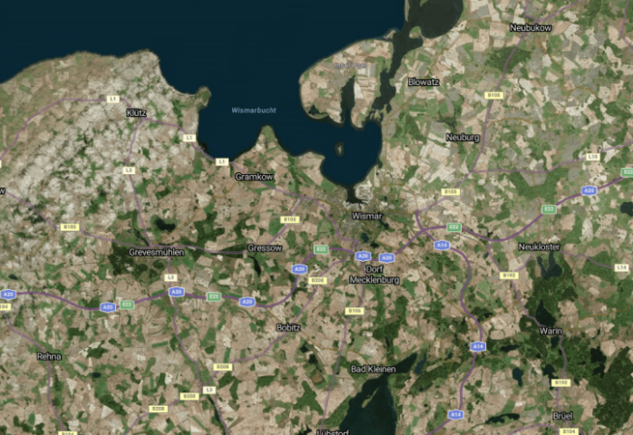

Lage: Nordwesten Deutschlands, an der Ostseeküste in Mecklenburg-Vorpommern
13. Jahrhundert als bedeutendes Hansemitglied
Ca. 42.000 (stand: 2024)
Wechselnde Herrschaften, darunter Schweden und Dänemark.
Im Zweiten Weltkrieg schwer beschädigt dann ein Teil der DDR, dann wiedervereinigtes Deutschland
UNESCO-Weltkulturerbe Altstadt, Rathaus, Nikolaikirche, Marktplatz, Hafen
Maritim geprägt mit Schiffbau und Fischerei.
Tourismus wichtiger Wirtschaftszweig !
Museen wie das Stadtmuseum Schabbellhaus, Theater Wismar, Kunstgalerien.
Jährliches Schwedenfest und diverse andere Veranstaltungen und Festivals
Malerische Altstadt, entspannte Atmosphäre, gute Infrastruktur durch den Wismarer Bahnhof und dem Zentralen Omnibusbahnhof.
Attraktivität durch Ostseeküste und Natur !